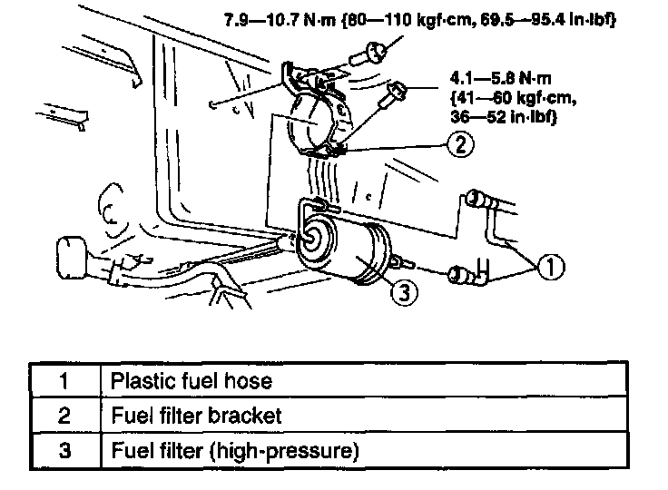
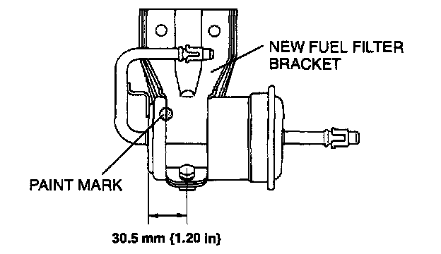
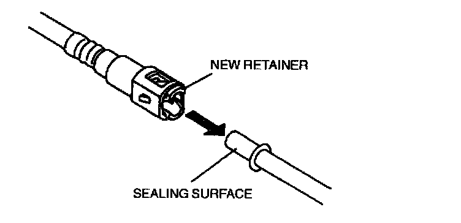

Removal and Installation
FUEL FILTER (HIGH-PRESSURE) REMOVAL/INSTALLATION
1. Complete the "BEFORE REPAIR PROCEDURE".
2. Disconnect the negative battery cable.
3. Raise the rear of the vehicle and support it with safety stands.
4. Remove the fuel filter protector.
5. Remove in the order indicated in the table.
6. Install in the reverse order of removal.
7. Complete the "AFTER REPAIR PROCEDURE".
Plastic Fuel Hose Disassembly Note
1. Inspect that the quick release connector joint area is free of foreign materials. Clean as necessary.

2. Squeeze the tabs of the retainer and disconnect the quick release connector.

3. Cover the disconnected quick release connector and fuel pipe to prevent them from being scratched or contaminated with foreign materials.
CAUTION:
- Removing the retainer from the disconnected fuel pipe will reduce the effectiveness of the retainer. The retainer must be replaced when any of the following applies.
1. Retainer has been removed.
2. Scratches or damage is observed on the retainer.
3. Plastic fuel hose has been replaced.
4. Fuel filter (high-pressure) has been replaced.
4. If removal of the retainer is required, remove it in the following procedure.
CAUTION:
- Removing the retainer by using a tool can damage the fuel pipe and cause fuel leakage. Remove the retainer by opening the tabs outward by hand.

1. Open the tabs of the retainer outward.
2. Remove and discard the retainer.

Fuel Filter (High-pressure) Removal Note
- Before removing the fuel filter, paint mark the fuel filter and fuel filter bracket for correct reassembly.
Fuel Filter (High-pressure) Installation Note Replacing the fuel filter:
1. Paint mark the new fuel filter on the same spot as the removed fuel filter.

2. Align the paint marks and install the fuel filter.
Replacing the fuel filter bracket:
1. Paint mark the new fuel filter bracket on the same spot as the removed fuel filter bracket.

2. Align the paint marks and install the fuel filter bracket.
Plastic Fuel Hose Assembly Note
1. When the retainer is not removed, observe the following procedure.
1. Inspect the plastic fuel hose for kinks. Replace if necessary.
2. Inspect that the inside of the fuel pipe and the quick release connector is free of foreign materials and damage. Clean as necessary, taking care not to damage the sealing surfaces.
3. Align the fuel pipe and quick release connector so that the tabs of the retainer are correctly fitted into the quick release connector. Push the quick release connector into the retainer until a click is heard.

4. Pull the quick release connector by hand and verify that it is installed securely. Visually inspect that the tabs of the retainer are securely fitted into the quick release connector.
2. When the retainer is removed, observe the following procedure.
NOTE:
- Use the designated genuine retainer only.
1. Install a new retainer onto the quick release connector. Visually inspect that the tabs of the retainer are securely fitted into the quick release connector.
2. Inspect that the inside of the fuel pipe and the quick release connector is free of foreign materials and damage. Clean as necessary, taking care not to damage the sealing surfaces.

3. Push the quick release connector into the fuel pipe until a click is heard.
4. Pull the quick release connector by hand and verify that it is installed securely.